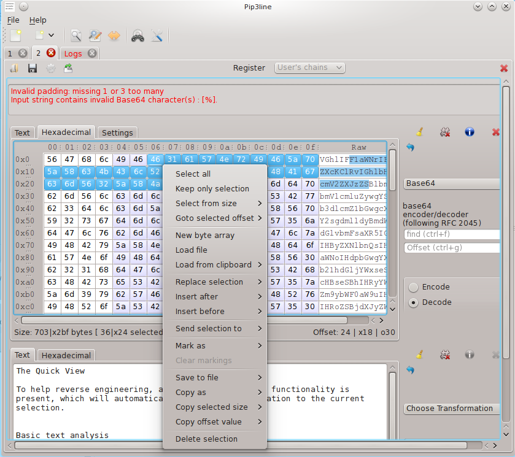

Pip3line, the Swiss army knife of byte manipulation
Pip3line is a raw bytes manipulation utility, able to apply well known and less well known transformations from anywhere to anywhere (almost).

Its main usefullness lies in pentesting and reverse-engineering / binary analysis purposes.
Current transformations list include classic decoders such as Base64/32/hex to simple cryptographic ciphers, and includes common hashes algorithms as well as obfuscation techniques.
Easy to use, but still offering some tweaking for most transformations, it also has the ability to save/restore a configured transformation chain for future used.
For a quick tour see the screenshots section
Transformations currently implemented
- Base32 (RFC 4648, Crockford, RFC 2938 a.k.a base32hex)
- Base64 (RFC 4648, ".Net" special version for *Resource.axd, Urlsafe)
- Base rotation algorithm on bytes (used by Firefox for obfuscation)
- Binary encoding
- Bytes to Integer
- Char encoding (Unicode, iso ...)
- Cisco secret 7 decryption/encryption
- Cut
- FIX protocol parser (v4.4)
- Hexadecimal
- Hieroglyphy For JavaScript obfuscation
- HMAC calculations (MD4, MD5, SHA-1, Qt5 specific: SHA-224, SHA-256, SHA-384, SHA-512)
- Html
- Int to Timestamp (Epoch)
- Int64 to Timestamp (Microsoft)
- IPv4 translator between number and string representation of an IP
- Netmask calculator for IPv4 and IPv6
- Md4/Md5/Sha1 (built-in)
- NTLMSSP Messages parser
- Padding (Zero, ANSI X.923, ISO 10126, PKCS7, custom single char)
- Random Case
- Regular Expression (match&extract, match&replace)
- Reverse
- ROTx (ROT13, ROT5, ROT47)
- Signed Short to Char decoder
- Split
- Substitution crypto algorithm
- Oracle/MySql/MSSql/Postgres/Javascript concatenated string
- Url Encode
- Xor
- XmlQuery (XPATH)
- Zlib compression
Additional Plugins
- OpenSSL hashes (Md4/Md5/Sha*/Whirlpool/MDC2/RIPEMD160)
- Python 2.7 & 3.x to run Python 2.7 & 3.x scripts
Extending Pip3line
Pip3line was designed to be extendable and allows you to create your own transformations by using the C++/Qt plugin API.
Alternatively you can just use the powerful Python 2.7 & 3 plugins to load your own Python scripts.
Please refer to the documentation for more information